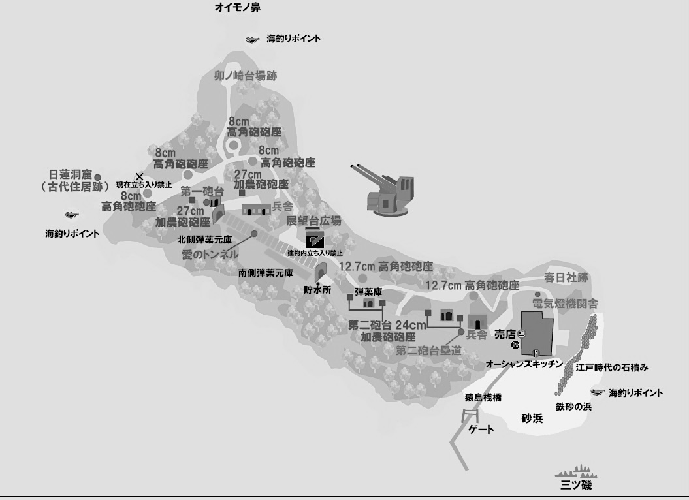
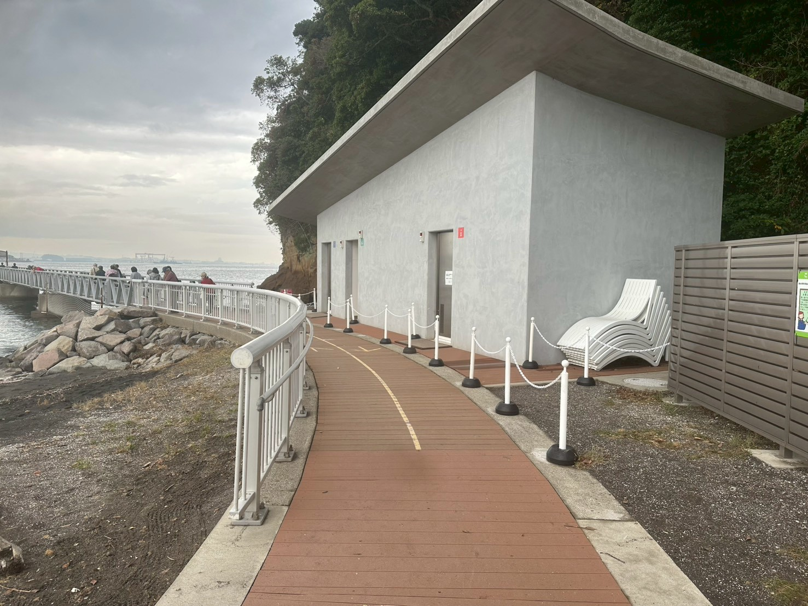
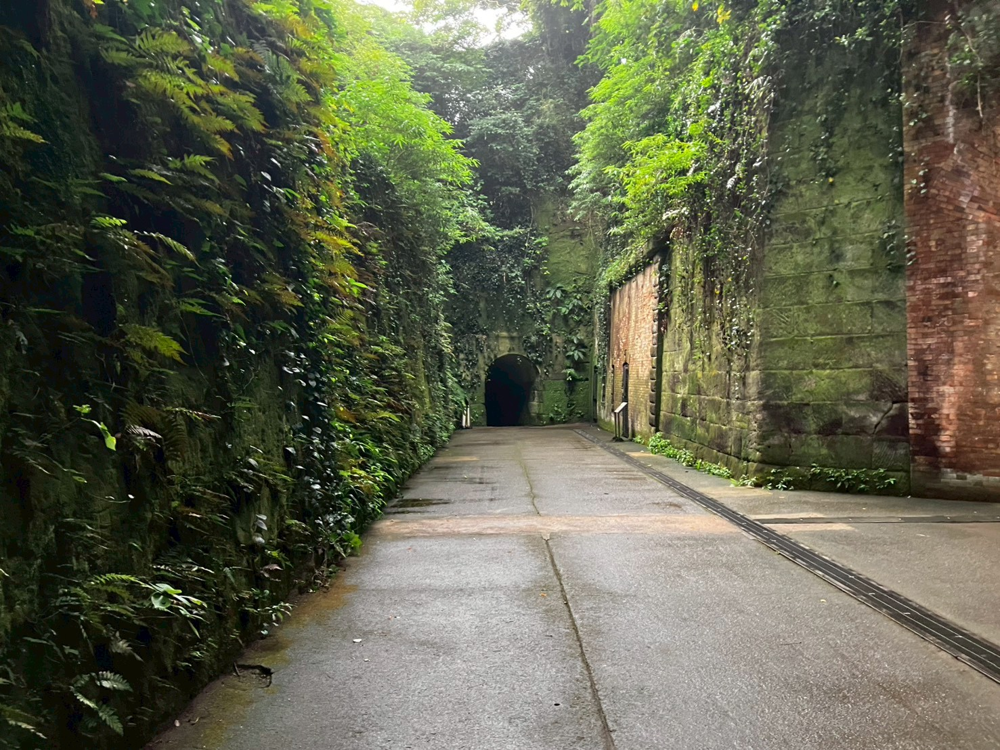
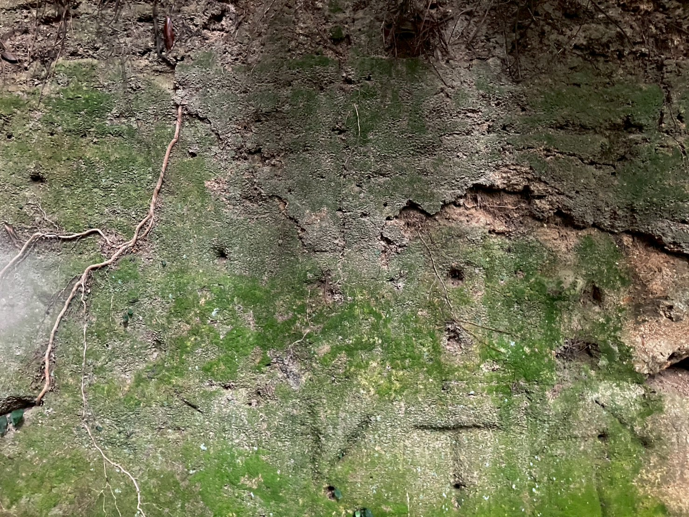
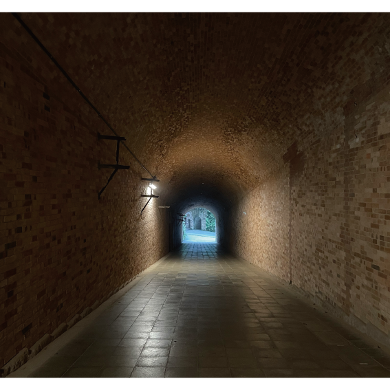
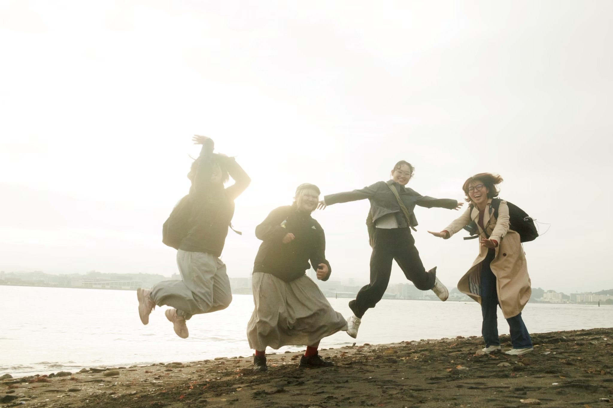
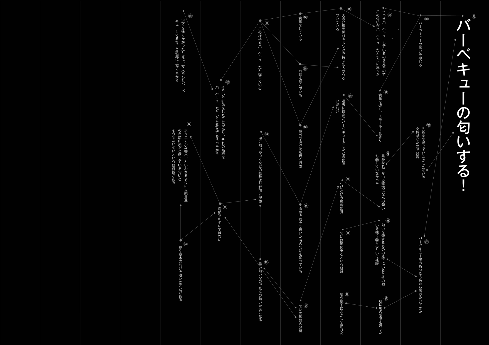

5つの認知を辿る
PARALLEL
VIEW
私たちは、世界をどう認知しているのか。
SCROLL ↓ABOUT
私達５人は、この後期のグループワークを通じて、人間の認知こそが地球をつくっていると考えた。
この地球という環境には、膨大な数の情報が存在しており、人間は日々の生活の中で、それらを無意識的に捉え、認知することで地球を作り上げている。 また同じ情報を知覚していても、個人の経験や知識、視点、環境の違いによって、人それぞれで物の捉え方は異なり、作られる地球像も人それぞれ異なるものになっている。私たちはこのような点に、面白さを感じた。
そこから ...
- 知覚した情報は、個々人の経験や知識と結びつき認知される
- その上で人それぞれ認知しているものは違っている
この二つをリサーチやフィールドワークの柱として捉え、５人での活動を進めていった。
フィールドワークでは猿島に向かった。猿島では五人が範囲を決めて、それぞれ動画に取りながら、声で気がついたこと、感じたことをそれぞれ記録した。 その中で、地球とは、外側に存在する知覚できる世界ではあるが、私たちそれぞれの認識の中で、各個人の中にも多様に地球がある。つまり地球を見る目がさまざま存在することがわかった。
本作品では、映像・発言のタイムライン・発言から辿った認知プロセスを通して、それぞれの「見ている世界」を記録する。
FIELDWORK
猿島という環境で個人が何を知覚しているのか調べるために、島の中で範囲を決め、その中でそれぞれが気になったこと、目についた周りの環境などを同時に動画にて記録した。。






VIDEO
猿島という環境で個人が何を知覚しているのか調べるために、島の中で範囲を決め、その中でそれぞれが気になったこと、目についた周りの環境などを同時に動画にて記録した。またその時思ったこと、感じたことをそれぞれ口にだして、記述も行った。
47 min / Fieldwork record
TIMELINE
動画の中で、ぞれぞれ５人が発言した言葉全体を、俯瞰視するために、全てを文字に起こし、壁に貼り付ける形で掲示した。動画では場面においてのそれぞれの視点の違いを見ることができるが、それに対して、タイムライン上では、撮影した範囲全体の視点や、情報の差を見ることができる。

THOUGHT
動画タイムラインの中での発言をいくつか選び、その発言がどういった知覚、知識、経験、理由などに基づいて現れた言葉なのか、発言の要素や、背景を分解的に記載し、樹形図にまとめた。発言から順に、その分解を辿っていくことで、発言者の意図や、その人が持つ視点などを見ることができる。

樹形図をクリックすると拡大して表示できます。